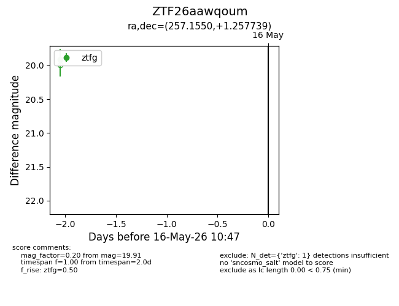
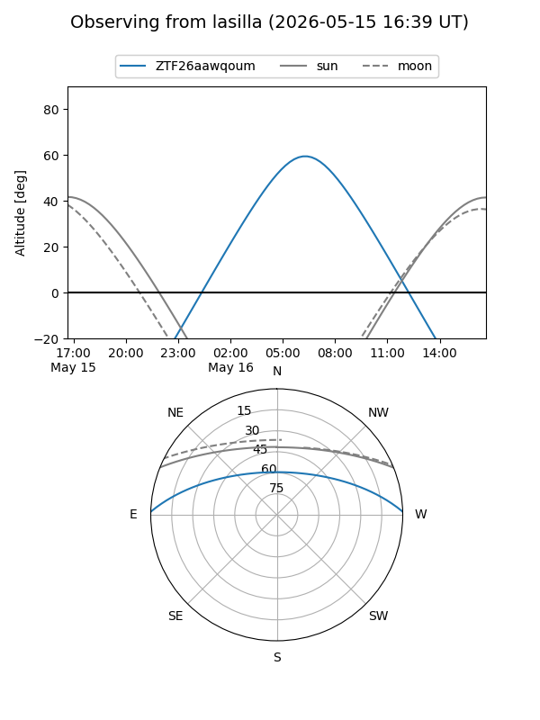
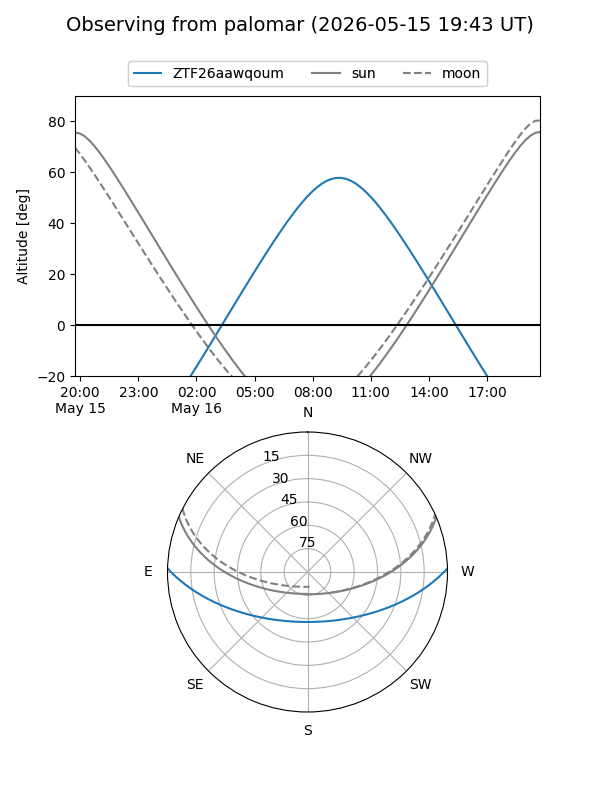

ZTF26aawqoum
Target ZTF26aawqoum at 2026-05-16 10:49
Aliases and brokers:
FINK: link
Lasair: link
ALeRCE: link
alt names
ZTF26aawqoum (ztf,fink_ztf)
Coordinates:
equatorial (ra, dec) = 257.1550,+1.25774
equatorial (HMS+DMS) = 17:08:37.20,+01:15:27.86
galactic (l, b) = (21.7428,+23.32396)
Flags:
Photometry:
last ztfg=19.91
1 ztfg detections
Lightcurve

Visibility


Additional plots